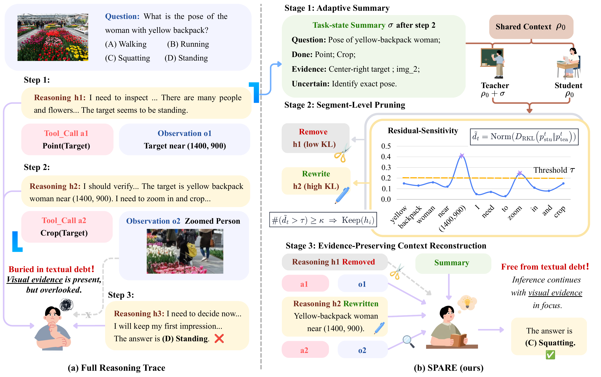
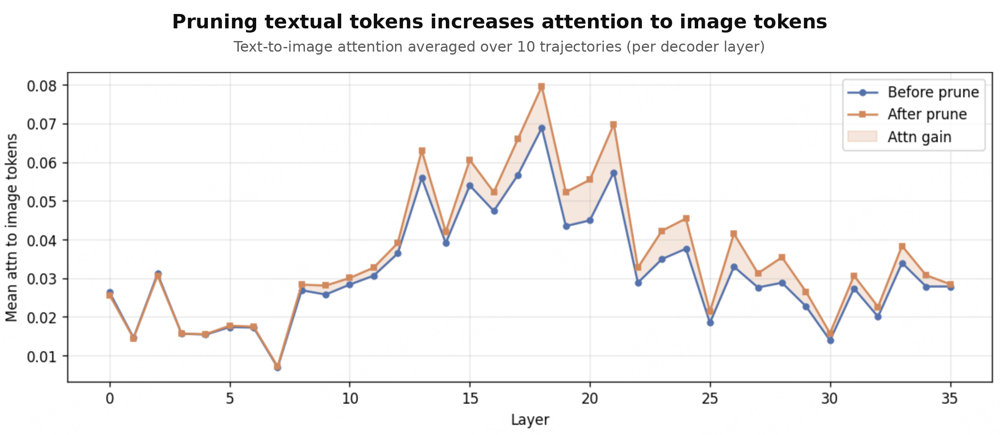

Official project page · 2026
Buried in Textual Debt
Context Pruning with Visual Evidence Preservation for MLLM Agents
SPARE selectively prunes accumulated reasoning and extracts concise visual evidence, while keeping tool calls, observations, and images unchanged.
The problem
Reasoning helps—until the model starts listening mostly to itself.
Over long trajectories, self-generated plans and hypotheses accumulate in the working context. Stale text can compete with later visual observations, locking the agent into an early mistake. We call this textual debt.
The method
Selective forgetting, guided by the model itself.
SPARE uses a compact task-state summary as temporary context for diagnosis and the next reasoning step. The summary is not stored in the persistent trajectory.

Summarize state
The agent creates a compact record of the question, completed tools, grounded evidence, and remaining uncertainty.
Measure residue
The same model replays the history with and without the summary. Truncated reverse KL measures summary-conditioned residual sensitivity.
Preserve evidence
Low-sensitivity text is removed. Programmatic rules extract concise visual evidence from selected high-sensitivity segments. Tool calls, observations, and images stay intact.
Results
A better accuracy–context trade-off.
Across four benchmarks, SPARE improves sample-weighted accuracy over Full Trace on both Qwen backbones. Nemotron shows a small accuracy decrease while pruning 41.34% of reasoning tokens.
Qwen3-VL-30B-A3B
+2.71pp
sample-weighted accuracy over Full Trace
69.40% reasoning pruned
Qwen3-VL-8B
65.29%
sample-weighted accuracy
61.20% reasoning pruned
Nemotron-Nano-VL-8B
41.34%
reasoning removed
35.35% accuracy vs. 35.99% Full Trace
Controlled diagnostic
Less likely to copy stale answers.
On the constructed GTA subset, SPARE reduces stale-answer copying more than random deletion. Questions, images, and tool interactions are held fixed. Free-form answer accuracy is unchanged, so this diagnostic measures reduced reliance on stale textual history.
Mechanism evidence
Visual evidence comes back into focus.
Across ten tool-use trajectories, attention to image tokens increases across nearly all decoder layers after pruning, consistent with reduced textual dominance.

Evaluation suite
Four benchmarks for the main evaluation.
GTA
General tool agents
V*
Guided visual search
BLINK-Jigsaw
Spatial perception
m&m's
Planning only
Open implementation
Run SPARE in the native tool loop.
The release includes benchmark-specific adapters, matched controls, token accounting, scoring, and regression tests. The example below uses V*, one of the four evaluation benchmarks. See the repository README for data and endpoint setup.
quick start
# Clone the repository
git clone https://github.com/lukahhcm/spare.git
cd spare
# Create an isolated environment
python -m venv .venv
source .venv/bin/activate
# Install one benchmark adapter
pip install -r \
benchmarks/vstar/requirements.txt
# Prepare data and start model/tools (see README)
export BASE_URL=http://127.0.0.1:8011/v1
export MODEL=qwen3-vl-8b
export CONTROLLER_ADDR=http://127.0.0.1:20001
export ITEMS_MANIFEST="$PWD/benchmarks/vstar/data/vstar/vstar.jsonl"
# Run five methods on V*
bash benchmarks/vstar/run_fiveway.shS
lukahhcm/spareOfficial implementation
- benchmarks/gtaGTA + OpenCompass
- benchmarks/vstarVisual search
- benchmarks/jigsawSpatial tools
- benchmarks/mnmsPlanning only
Citation
Build on SPARE.
If this project helps your research, please cite the paper and retain the original benchmark citations included in the repository.
@misc{huang2026buried,
title = {Buried in Textual Debt: Context Pruning with Visual Evidence Preservation for MLLM Agents},
author = {Yuchen Huang and Sijia Li and Jun Zhang and Yi R. Fung},
year = {2026},
eprint = {2608.22963},
archivePrefix = {arXiv},
primaryClass = {cs.AI},
url = {https://arxiv.org/abs/2608.22963}
}